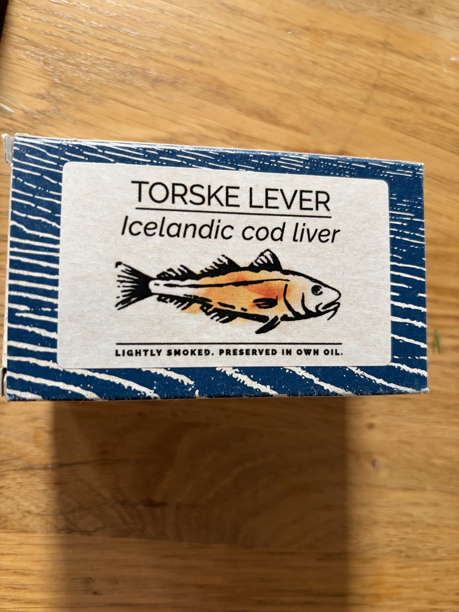

El Capricho Santoña Sturgeon
Award-winning tinned sturgeon in olive oil from Santoña.
What It Is
Sturgeon (Acipenser sturio or farmed A. gueldenstaedtii / A. baerii), processed by El Capricho, a premium conserva house in Santoña (Cantabria). Sturgeon in Spanish conserva is a rarity — the fish is not native to Iberian Atlantic waters in commercial quantities, so this represents either imported farmed sturgeon or occasional bycatch, processed with the same care as the house's tuna and anchovy lines. The product is typically sturgeon loin or belly meat, packed in olive oil. Quality markers: pale, almost ivory-to-pink flesh, firm texture, no strong "muddy" flavor (a sign of poor sturgeon handling), clean oil.
Nutritional Profile
Per 100g (with oil):
- Calories: ~180–220 kcal
- Protein: 16–20g
- Fat: 12–16g (sturgeon is a moderately fatty fish, plus the oil)
- Omega-3: ~1.0–1.5g
- B12, selenium, phosphorus: good
- Sodium: ~350–450mg
Preparation & Service
Serve at cool room temperature — 16–18°C/61–64°F. Sturgeon meat is dense and benefits from being allowed to warm slightly from refrigerator temperature so its subtle flavors can emerge. Drain gently, reserving the oil. The flesh can be sliced or left in pieces depending on the tin format. Do not overcook if warming — a brief bain-marie is acceptable, but sturgeon can become dry. It is best treated as a "white tuna" analogue: presented in thick pieces, perhaps barely seared on one side for contrast.
Traditional & Modern Eating Context
Sturgeon has no deep traditional conserva context in Spain — this is an innovation or a niche luxury product. For VIP service, present it as a conversation piece: "Spain's answer to white tuna, from the ancient fish that also gives us caviar." The novelty is part of the value. Treat it with the same reverence as the Herpac tuna loin.
Flavor & Texture
The texture is firm and meaty — denser than tuna, with a fine grain that holds together well. It is almost poultry-like in its substance. The flavor is mild and clean, with a faint sweetness and a subtle, pleasant earthiness (sturgeon feed on benthic organisms, and a slight "riverbed" note is characteristic and desirable). There is none of the strong off-flavor that poor sturgeon can exhibit. The olive oil complements without masking, and the finish is long, clean, and faintly nutty.
Pairings & Composition
- Wines: White Burgundy, aged Godello, or a light Pinot Noir
- Bases: Potato, celery root, salsify, white bean purée
- Acids: Lemon, light verjus, caper berries
- Aromatics: Dill, chervil, gentle mustard
- Dish idea: Esturión con crema de apionabo — thick slices of sturgeon over a warm celery root cream, dressed with the packing oil, caper berries, and a few sprigs of dill. A bridge between land and sea.